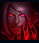
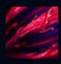
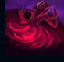
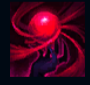
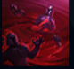

Vladimir
| Vladimir The Crimson Reaper | |
|---|---|
| Release date | 27.07.2010 |
| Class | Battlemage |
| Positions | Top,Middle |
| Resource | Bloodthirst |
| Range type | Ranged |
| Adaptive type | Magic |
| Base statistics | |||
| Health | 537 – 2169 | Resource | N/A |
| Health regen. | 7 – 17.2 |
Secondary Bar | Bloodthirst (2) |
| Armor | 23 – 79.1 | Attack damage | 55 – 106 |
| Magic resist. | 30 – 38.5 | Crit. damage | 175% |
| Move. speed | 330 | Attack range | 450 |
Vladimir este un diavol însetat de sânge care a influențat Noxusul încă de la fondarea imperiului. Talentul său la hemomanție nu numai că i-a prelungit viața în mod nefiresc, ci l-a ajutat și să controleze mințile și trupurile celorlalți la fel de bine ca pe ale sale. În saloanele elegante unde se adună aristocrația noxiană, acest talent i-a permis să-și clădească un cult fanatic al personalității; iar pe aleile lăturalnice, îl ajută să-și sece inamicii și de ultimul strop de sânge. |  |
JURĂMÂNT DE SÂNGE La fiecare 40 de puncte de viață bonus, Vladimir primește 1 punct de puterea abilităților, iar la fiecare 1 punct de puterea abilităților, primește 1,4 puncte de viață bonus (bonusul nu se cumulează cu el însuși). |
||
|---|---|---|---|---|
 |
TRANSFUZIE Vladimir fură viață de la inamicul-țintă. Când Vladimir este cuprins de frenezie, ''Transfuzia'' va provoca daune mult mai mari și îl va vindeca mult mai mult pe o perioadă scurtă de timp. |
|||
 |
BALTĂ DE SÂNGE Vladimir se scufundă într-o baltă de sânge, devenind imposibil de țintit timp de 2 secunde. În plus, inamicii din baltă sunt încetiniți, iar Vladimir le absoarbe forța vitală. |
|||
|  |
ȘIROAIE DE SÂNGE Vladimir își consumă propria viață pentru a crea o rezervă de sânge care, atunci când explodează, provoacă daune într-o zonă din jurul lui, dar care poate fi blocată de unitățile inamice. |
|||
 |
SÂNGE INFECTAT Vladimir infectează o zonă cu o molimă virulentă. Inamicii afectați suferă daune sporite pe durata abilității. După câteva secunde, ''Sângele infectat'' le provoacă inamicilor afectați daune magice, iar Vladimir se vindecă în funcție de numărul de inamici loviți. |